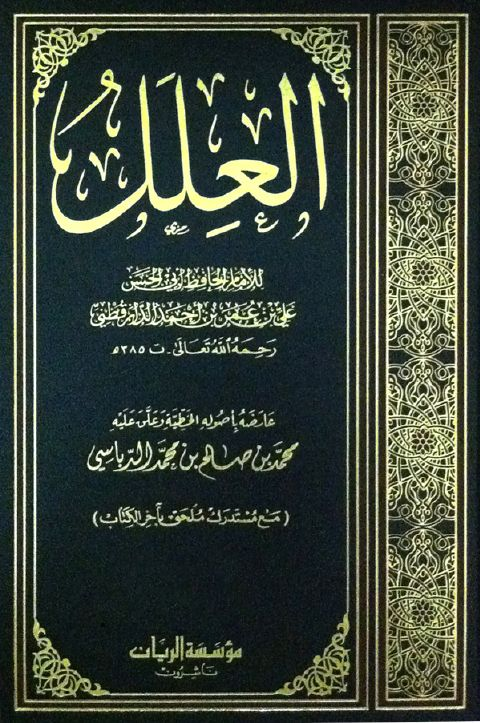

Downloads need an internet connection.
العلل -ت محمد الدباسي- الريان
Authors: الدارقطني
Editors: محمد بن صالح محمد الدباسي
Publishers: مؤسسة الريان
**▫️ العنوان: العلل -ت محمد الدباسي- الريان** ▪️ المؤلف: #علي_بن_عمر_الدارقطني_أبو_الحسن ▫️ المحقق: #محمد_بن_صالح_محمد_الدباسي ▪️ الناشر: #مؤسسة_الريان ▫️ تاريخ النشر: 1432هـ 2011م ▪️ بلد النشر: بيروت، #لبنان ▫️ الطبعة: 3 ▪️ عدد الأجزاء: 10 ▫️ الصفحات: 4523 ▪️ نوع الوعاء: #كتاب ▫️ التصنيف الرئيسي: #الحديث_وعلومه ▪️ التصنيف الفرعي: #علل ۪